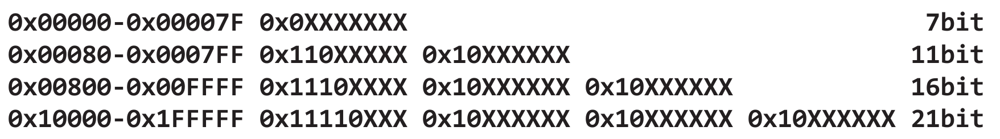
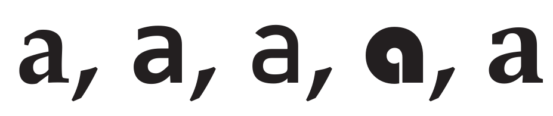

字符串
文本是当今计算中最常用的数据类型之一。文本可以表示特定自然语言中的特定表达式(如英语中的句子)，任意字符的二进制转储(如二进制字节数组)，表达式的多语言表示(其中句子可能包含来自另一种语言的单词)。我们将介绍在Julia中文本是如何表现的。
一个句子可能包含来自多种语言的符号和字符。例如，英语句子中的数学符号和希腊表达式。最后，文本通常被用作除了使用文本关键字外没有其他方法表示实体的最后手段。对于这种情况，虽然经常使用Julia符号，但是文本也是可以的。本章将对前面所讨论的各个方面作一些详细的探讨。文本使用的多样性带来了许多表示方面的挑战，我们必须从概念上理解Julia语言的设计。虽然文本的结构可能会涉及文档结构和表示的复杂性，但我们将把讨论的范围限制在字符串的概念上。
字符串
字符串是作为文本表示的字符的集合。虽然它们在特定语言中可能是有意义的句子，但它们可以是完全没有意义的字符的集合。
This is a valid sentence.
Abccnajkvnkavnak
前面两行都是有效的字符串，但在英语中不都是有效的句子。
字符
一组字符组成一个字符串。在前面的例子中：
[' ', 'T', 'a', 'c', 'd', ‘e’, ‘h’, ‘i’, ‘l’, ‘n’, ‘s’, ‘t’, 'v']字符组成句子 This is a valid sentence。
字符在集中的顺序和位置也很重要。
编码
我们平时书写的字符对计算机来说没有任何意义。在计算机中，每个实体都被表示为一个数值或数值的等价二进制值。这样的数字被称为编码。在使用美国信息交换标准码(ASCII)作为编码方案的计算机中，字符a被表示为编码值97或0x61。ASCII只是表示英语字符集编码中的一种。另外一种是扩展二进制编码的十进制交换码(EBCDIC)，它曾是IBM大型机的首选，但现在不再流行了。在开始研究文本的Julia语言结构之前，我们将从概念上讨论一些编码（在深入研究一些具体编码之前，先进行一些理论理解）。这个介绍不完全按照时间的先后顺序，因为我们的重点是获得一种直观的理解。
ASCII
7位字符表示法，目的是表示所有可打印英语字符，以及一些用于设备间通信(如串行或并行通信通道)的非打印字符。ASCII的设计方式是在特定范围内将大写字母和小写字母分组；类似地，所有数字也都分组在一个范围内。这使得编程和识别字符更加容易，这一点是EBCDIC所欠缺的。与此同时，由于字节已经成为微处理器中的计算单元，这使得最左边的1个自由位可以容纳额外的128个字符。美国国家标准协会(ANSI)考虑了常用的非英语字符，并试图将其中的128个字符作为ANSI字符代码。微软和苹果这样的操作系统供应商也提出了他们自己的字符编码，如Windows-1252编码或Mac Roman编码，等等。它们基本上都支持从0到127的字符代码的一般ASCII规范，但为了方便起见，它们为从128到255的每个字符代码添加了各自的字符集。这导致了在不同操作系统和设备上显示和转换文档时的“编码战争”。业界中使用的术语“高位ASCII”或“扩展ASCII”，本质上是字符码128-255在不同标准之间的变化。
ISO-8859
ISO-8859是一组编码，包含1-16个代码页，每个代码页代表可以一起表示的一类欧洲语言——有时也称为Latin-1、Latin-2等编码。所有这些代码页都有0-127支持基本ASCII字符，而128-255可能支持一类特殊的欧洲区域语言，如西里尔语、波罗的海语等。这种安排确保了在计算机中轻松地支持欧洲语言。通常，多语言文档或屏幕会使用某种形式的代码页切换命令，并从新代码页中拾取切换的字符编码。当然，它的优点是所有字符串都可以表示为8位值的二进制转储。
'C'编码
‘C’语言是在20世纪70年代末引入的，它使用了非常简单的文本范式。任何二进制8位字节数组都是字符串。数组的最后一个字节必须以字符码(0)或NULL结束。这个概念被称为NULL终止字符串或c字符串，它确保了代码解释保持在字符串操作之外。C语言本身在实现字符串方法时完全忽略了语言内部的编码解释，并期望程序员在他们正在开发的应用程序或系统中处理它。由于缺乏更好的术语，一些计算机系统，如GNU Linux，将其称为C编码。在UNIX等系统中，C编码是系统的默认编码。
Unicode
随着计算机的普及，人们越来越清楚地认识到计算不能再局限于一个特定的区域。其次，数据交换还要求数据能够在任何可用的计算系统中显示。第三，因为计算机中可用的存储和内存都变得便宜了，所以表示文本所需的内存可以增加到超过一个字节。不需要再对字符进行单字节限制。一群计算机科学家和来自不同组织和学术机构的语言学家聚集在一个Unicode联盟组织下，提出了通用编码字符集(UCS)。1991年引入的第一组字符集大约有7000个字符，由称为UCS-2的2字节字符表示。很快，随着更多的语言加入到规范中，字符开始增长。这时在一个称为UCS-4的表示中为每个字符分配4个字节。实际上，Unicode规范定义了16个大小为65536(2^16)的代码平面，其中实际使用的值很少。从技术上讲，32位中只有20位真正用于实际目的。然而，许多计算机系统继续在操作系统中实现宽字符，Windows开发了一个本地16位操作系统Windows NT，并停止了旧的Windows 95代码基。在上世纪90年代末和新千年前期，需要使用宏分别编译8位和16位版本的代码。
Unicode转换
世界上的一部分人正忙于重写操作系统核心以支持宽字符。甚至一些unix派生系统也有4字节实现的宽字符。Ken Thompson提出了重用c编码作为Unicode字符基础的想法。但是，c编码或c字符串不能被用作整个字节的数据被设置为NULL的UCS-2和UCS-4，因为在c语言中，字符串终止字符被定义为0。例如，字符'a'的UCS-2代码是U+0061，其前导字节为0。
他希望Unicode字符的表示方式是这样的：
ASCII字符在新的编码中仍然有效，这意味着不能对0x00-0x7F范围内的任何字符进行转换。
对于任何值为128或更高的字符，必须用多字节字符表示。
新的编码必须有一个前导字节，告诉接下来要读取多少个字节。
在出现歧义的情况下，应该选择用最少字节数表示的代码。
用于前导和后置字节的模式必须是这样的，如果有任何违反，它将很容易识别字符序列是损坏的，以便于在即使没有如CRC等任何冗余检查的情况下更容易传输。
这个方案确保除了实际的NULL字符之外，其他字符的字节都不是零。
下面是该方案最终的样子：

上面的表示称为UTF-8。那21位以外的编码呢？到目前为止，Unicode规范使用的信息不超过21位，但该方案可以容纳多达36位的信息，覆盖整个UCS-4范围。与UTF-8类似，UTF-16考虑将字符代码扩展为每次2字节的字符。此外还有UTF-32转换方案。
Julia对Unicode的支持
Julia语言原生支持Unicode，甚至变量和常量也可以使用Unicode字符。Julia字符串(String类型)在内部被存储为UTF-8编码的Unicode字符流。Julia中的字符(Char)被表示为4字节的UTF-8编码。在Julia中，以UInt8表示的原始字节不是Char。然而，作为一种语言，Julia支持用其他编码表示字符串的结构。还可以使用Julia接口开发自己的字符代码和字符串。你可能需要与原生C/C++应用程序交换信息，这可能需要从Julia代码中将字符串信息交换为Cstring。在C语言中，Cstring是一个以零结束的字符串。
字体和字形
让我们看看a在不同字体中的表示：

字体和字形提供了字符的视觉外观和感觉。作为一种编程语言，Julia没有提供任何控制字体或字形选择的机制。
现在我们理解了文本计算的各个方面，让我们看看Julia是如何满足这些需求的。
字符串
在Julia中，String对象可以用以下字面表达式进行初始化。
julia> str = "This is a string""This is a string"
字符串是不变的，一旦创建，它们就不能被修改。下面是另一种定义字符串的方法，其保留了格式和新行字符，特殊字符不需要额外的引号。
julia> str = """ This is a preformatted "string" """"This is a preformatted\n\"string\" "
字符串可以包含由其他变量计算得到的信息，并纳入最终计算结果。
julia> a = "Jack";julia> b = "Jill";julia> c = "100";julia> str = "$a owes $b $c dollars""Jack owes Jill 100 dollars"
字符串中使用的特殊字符，如引号(")或反斜杠(\)需要使用反斜杠(\)转义。
julia> str = "This is a \"quoted\\ ' string""This is a \"quoted\\ ' string"
字符串是不变的。因此，它们可以驻留在系统内存中，即使在收集垃圾时也不会被覆盖。内存调试器可用于读取随机内存位置。对于像密码这样的敏感数据，你应该考虑使用字节或字符数组结构，并在使用数据后覆盖内存位置。解引用内存对象并强制调用垃圾回收可能不是最安全的选项。
字符串方法
我们将介绍一些字符串的标准方法。
比较
字符串对象之间可以使用标准比较运算符isequal(==)、isless(<)或大于(>)进行比较。比较通常根据字典顺序。
julia> s1 = "abc""abc"julia> s2 = "def""def"julia> s1 < s2truejulia> s2 > s1truejulia> s1 = "abc""abc"julia> s2 = "abc""abc"julia> s1 == s2true
等同运算符(===)在不同对象之间进行比较，对于不变的字符串对象，则按位进行比较。
julia> s1 === s2true
迭代
就像数组和集一样，字符串也是字符序列的自然集。因此，当对字符串进行迭代时，你能够枚举字符。
julia> s = "Julia";julia> for c in s println(c) endJ u l i a
与其他集一样，Julia字符串也支持基于1的索引，并在每个位置上显示字符。
julia> s[1], s[2], s[3], s[4], s[5]('J', 'u', 'l', 'i', 'a')
begin和end也可以像在其他类型的集中一样使用。
julia> s[begin], s[begin+2], s[end-1], s[end]('J', 'l', 'i', 'a')
让我们取一个包含多字节UTF-8字符的字符串。
julia> s = "\u2200 x \u2203 y""∀ x ∃ y"julia> length(s) # No of characters in the String7julia> sizeof(s) # No fo bytes in the String11julia> s[1]'∀': Unicode U+2200 (category Sm: Symbol, math)julia> s[2]ERROR: StringIndexError: invalid index [2], valid nearby indices [1]=>'∀', [4]=>' 'julia> s[4]' ': ASCII/Unicode U+0020 (category Zs: Separator, space)
因此，getindex方法将字节索引作为输入，并返回一个有效的字符。但是，当索引没有映射到有效字符时，就会像s[2]中的情况一样抛出异常。但是，for...in循环可对字符进行迭代。
julia> for c in s println(c) end∀ x ∃ y
另一种使用索引变量的方式是使用方法nextind。该方法将返回下一个具有有效字符的索引。
julia> i, l = firstindex(s), lastindex(s);julia> while i <= l println(s[i]) i = nextind(s, i) end∀ x ∃ y
拆分和连接
将字符串拆分为子字符串的最简单方法之一是使用索引，连接则使用运算符(*)。
julia> str = "This is a String""This is a String"julia> str[1:4]"This"julia> str[1:4]*str[end-6:end]"This String"
- 由于字符串是不变的，每个子字符串或连接运算都会在它们被连接之前分配中间字符串。可以使用
repeat函数或其别名运算符(^)创建文本模式的重复序列。
julia> repeat("A:-", 5)"A:-A:-A:-A:-A:-"julia> "A:="^4"A:=A:=A:=A:="
join对输入字符串集进行组合。可以选择提供分隔符如逗号(,)和最后连接词如and。
julia> join(["1", "2", "3", "4", "5"])"12345"julia> join(["Jack", "Jill", "Cathy", "Trevor"], ", ", " and ")"Jack, Jill, Cathy and Trevor"
chomp移除字符串中的最后一个行结束符。
julia> str = "This is a\nString\n""This is a\nString\n"julia> chomp(str)"This is a\nString"
chop从头部和尾部删除字符。默认情况下，不从头部删除字符，只从尾部删除一个字符。但是，关键字head和tail可以用来分别指定从头部和尾部删掉打字符数。
julia> chop("October")"Octobe"julia> chop("October", head=2, tail=3)"to"
split方法根据空格拆分字符串对象并返回一个子字符串对象数组。
julia> s = "\u2200 x \u2203 y""∀ x ∃ y"julia> ss = split(s)4-element Vector{SubString{String}}: "∀" "x" "∃" "y"
- 字符串对象是不变的，任何提取字符串一部分的表达式都将分配一个新的字符串。子字符串是字符串对象的视图。在前面的示例中，数组中所有拆分的子字符串对象都指向同一个字符串对象。子字符串对象扩展了AbstractString接口，因此在需要时可用于转换为字符串对象。
split方法也支持分隔符。
julia> s = "\u2200,x,\u2203,y""∀,x,∃,y"julia> ss = split(s, ',', limit=2)2-element Vector{SubString{String}}: "∀" "x,∃,y"julia> s = "\u2200,x,\u2203,y""∀,x,∃,y"julia> ss = rsplit(s, ',', limit=2)2-element Vector{SubString{String}}: "∀,x,∃" "y"
split示例使用逗号(，)作为分隔符，并将分割部分的数量限制为2。与split从左边拆分字符串类似，rsplit从右边拆分字符串。
lpad和rpad为字符串添加前缀或后缀，使其达到指定的长度。
julia> lpad("string", 10, "p")"ppppstring"julia> rpad("string", 10, "s")"stringssss"
strip函数删除字符串两边的空格字符。该函数还可以有选择地接受一个要从两端删除的字符数组。也可以使用计算值为true在两端进行删除。lstrip和rstrip是两个类似于strip的函数，但只分别作用于字符串的左端和右端。
julia> strip(" string 123 ")"string 123"julia> strip(" {a} sting 123 ",['{', 'a', '}', ' '])"sting 123"julia> strip(" string 123 aaa") do x return x == ' ' || x == 'a' end"string 123"
大小写转换
一些函数都输出结果如字面意义所示：
julia> uppercase("Julia")"JULIA"julia> lowercase("JULiA")"julia"julia> titlecase("hands on programming in julia")"Hands On Programming In Julia"julia> uppercasefirst("julia")"Julia"julia> lowercasefirst("JuLia")"juLia"
模式匹配
模式匹配函数可以分为不同的类别。下面给出了其中的一些：
startswith，endswith和contains分别搜索字符串的开始部分，结束部分和字符串中的任何位置，返回它们是否在字符串中出现。occurrence (needle, haystack)是contains(haystack, needle)的另一种表示形式。
julia> str = "Introduction to Julia";julia> startswith(str, "Intro")truejulia> endswith(str, "Julia")truejulia> contains(str, "to")truejulia> occursin("to", str)true
findfirst和findnext沿着字符串对象搜索模式序列。findlast返回模式最后出现的位置。
julia> r = findfirst("o", "Introduction to Julia");julia> while r !== nothing println(r) r = findnext("o", "Introduction to Julia", r.stop+1) end5:5 11:11 15:15julia> findlast("o", "Introduction to Julia")15:15
replace将搜索的输入模式更改为选取的另一文本。
julia> replace("Introduction to Julia", "o"=>"a")"Intraductian ta Julia"
正则表达式
正则表达式是一种模式匹配语言构造，它使计算机程序员能够定义与文本字符串匹配的复杂模式。这些模式主要用于编译器设计和标记器等。UNIX中使用正则表达式(regex)进行模式匹配的几个常用应用程序是lex、grep和egrep。与grep支持的标准语法相比，PERL、Python和R等编程语言提供了扩展的正则表达式语法支持。PERL兼容正则表达式(PCRE)库集成到了Julia中。因此，Julia对正则表达式的支持与任何其他语言一样强大。虽然我们在这里展示了一些正则表达式的示例，但这一节并没有专门介绍正则表达式的所有细节。读者需要阅读更专业的文档来深入了解正则表达式。
可以看到，下面的示例中创建了一个Regex对象。将它与字符串匹配。匹配的对象存储在RegexMatch对象中。
julia> rx = Regex("a.a")r"a.a"julia> m = match(rx, "abracadabra")RegexMatch("aca")julia> m.match"aca"
偏移匹配可以匹配到ada而不是aca。
julia> m = match(rx, "abracadabra", 5)RegexMatch("ada")
在下面的例子中，一个@r_str宏(将在下一章详细讨论)被用来初始化Regex对象。rx对象定义了一个捕获组，匹配的正则表达式可以将捕获保存在capture属性中。
julia> rx = r"a(.)a";julia> m = match(rx, "abracadabra");julia> m.captures1-element Vector{Union{Nothing, SubString{String}}}: "c"
现在使用命名捕获显示相同的示例。可以使用捕获的组名对RegexMatch进行索引来收集捕获的数据。
julia> rx = Regex("a(?<key>.)a");julia> m = match(rx, "abracadabra");julia> m.captures1-element Vector{Union{Nothing, SubString{String}}}: "c"julia> m["key"]"c"
你还可以将模式多次匹配到字符串中。
julia> rx = r"a.a"r"a.a"julia> m = eachmatch(rx, "abracadabra", overlap=true)Base.RegexMatchIterator(r"a.a", "abracadabra", true)julia> collect(m)2-element Vector{RegexMatch}: RegexMatch("aca") RegexMatch("ada")
当允许重叠字符串时，aca和ada都是匹配的。当overlap参数设置为false时，只匹配aca。
julia> m = eachmatch(rx, "abracadabra", overlap=false)Base.RegexMatchIterator(r"a.a", "abracadabra", false)julia> collect(m)1-element Vector{RegexMatch}: RegexMatch("aca")
不仅仅是match或eachmatch, 正则表达式匹配也被作为模式参数用于比如findfirst，findnext，occursin，replace，split，rsplit，startwith和endswith。
编码
Julia中的字符串对象本质上是Unicode表示。它们是否遵循特定的转换？可以转换为其他东西吗？有些问题对于读者来说是很自然的。如果你还记得迭代中的讨论，nextind方法将索引对齐到下一个UTF-8字符的位置上。这确保字符串对象本质上是UTF-8表示。但是，可以通过函数transcode提取出UTF-8、16和32数组表示。
julia> s = "\u2200 x \u2203 y""∀ x ∃ y"julia> transcode(UInt8, s)11-element Base.CodeUnits{UInt8, String}: 0xe2 0x88 0x80 0x20 0x78 0x20 0xe2 0x88 0x83 0x20 0x79julia> transcode(UInt16, s)7-element Vector{UInt16}: 0x2200 0x0020 0x0078 0x0020 0x2203 0x0020 0x0079julia> transcode(UInt32, s)7-element Vector{UInt32}: 0x00002200 0x00000020 0x00000078 0x00000020 0x00002203 0x00000020 0x00000079
transcode还可以将UTF字节数组转换为字符串对象。
julia> transcode(String, transcode(UInt16, s))"∀ x ∃ y"
有用的函数
有些函数相当直观。然而，不仅仅局限于ASCII字符集或英语字符，所有这些方法都适用于存在相关函数的所有语言的Unicode字符。它们利用Unicode表中的字符类别定义来确定这些属性。例如，所有属于Lu类别的字符对于isuppercase方法都返回真。类似地，当isspace方法查询字符时，类别Zs将被提取。
julia> isascii("∀ x ∃ y"), isascii("abcd ef")(false, true)julia> iscntrl('a'), iscntrl('\x1')(false, true)julia> isdigit('a'), isdigit('9')(false, true)julia> isxdigit('a'), isxdigit('x')(true, false)julia> isletter('1'), isletter('a')(false, true)julia> isnumeric('1'), isnumeric('௰') #No. 10 in Tamil (Indian) Language(true, true)julia> isuppercase('A'), islowercase('a')(true, true)julia> isspace('\n'), isspace('\r'), isspace(' '), isspace('\x20')(true, true, true, true)
在处理字符串和编码时，我们发现一些函数针对单个字符的属性。因此，将字符串转换为字符数组是很重要的。
字符数组
如前所述，字符串对象是字符的集。但是，它们不能被修改。你不能像对数组或其他容器类型那样灵活地对它们进行操作。然而，有很多函数可以用来转换字符串对象和创建另外的字符串对象。然而,如果需要，你可以使用collect方法将字符串转换为字符数组。
julia> collect("∀ x ∃ y")7-element Vector{Char}: '∀': Unicode U+2200 (category Sm: Symbol, math) ' ': ASCII/Unicode U+0020 (category Zs: Separator, space) 'x': ASCII/Unicode U+0078 (category Ll: Letter, lowercase) ' ': ASCII/Unicode U+0020 (category Zs: Separator, space) '∃': Unicode U+2203 (category Sm: Symbol, math) ' ': ASCII/Unicode U+0020 (category Zs: Separator, space) 'y': ASCII/Unicode U+0079 (category Ll: Letter, lowercase)
如前面所示，你还可以使用transcode方法来获得字符串对象的UTF-8，16，32转换向量。一旦有了字符数组，就可以在数组操作中以任何需要的方式使用它。
用户定义字符串
罗马不是一天建成的，Julia字符串API也不是。字符串是包装在集中的UTF-8表示，该集将字符对象作为eltype。
julia> eltype("abcd")Char
该体系结构被进一步扩展，以定义一个抽象的AbstractString类型，该类型将AbstractChar视为一个元素类型。在1.0之前的版本中，Julia有很多这样的实现，比如ASCIIString、UTF8String等等，它实际上是为一些常用的编码方案提供了基础。许多经典的字符串类型在功能上合并到String类型中，一些被移动到一个名为LegacyString.jl的可选包中。虽然使用那个包没有什么显著的好处，但是对于有兴趣尝试和实现自己的字符串类型的人来说，它们是一个很好的参考来源。如果你对实现自己的字符串类型感兴趣，请确保实现了AbstractString和AbstractChar接口。
AbstractChar
这个接口本质上要求任何派生字符都应该有一个Unicode表示值。同样，给定一个有效的Unicode值，必须能够创建一个字符。
julia> struct MyChar <: AbstractChar a::UInt32 endjulia> MyChar(n::Number)=MyChar(UInt32(n))Main.MyCharjulia> Base.codepoint(c::MyChar) = c.ajulia> MyChar(32)' ': ASCII/Unicode U+0020 (category Zs: Separator, space)
如果代codepoint输入值不在编码范围内，构造函数必须抛出错误。
AbstractString
AbstractString接口要复杂得多，并且对字符串对象的内部组成也做了一些假设。例如，这些接口定义了在字符串中定义一个字符所需的最小字节数的假设。如果你使用LegacyString，你会意识到ASCIIString使用一个unit8的codeunit，而UTF16String使用一个unit16的codeunit。但两者在代码单元中的内部数据长度相同。
julia> using Pkgjulia> Pkg.add("LegacyStrings")Resolving package versions... No Changes to `~/Example/docs/Project.toml` No Changes to `~/Example/docs/Manifest.toml`julia> using LegacyStringsjulia> s = ASCIIString("abcd");julia> codeunit(s)UInt8julia> ncodeunits(s)4julia> s16 = UTF16String(transcode(UInt16, "abcd\0")); # NULL terminationjulia> codeunit(s16)UInt16julia> ncodeunits(s16)4julia> eltype(s),eltype(s16)(Char, Char)
尽管前面例子中的ASCIIString和UTF16String对存储的内部数据有完全不同的内部表示，但它们使用Char作为迭代的eltype。没有为这两种数据类型定义另外的字符类型。
除了上述方法外，AbstractString的派生类型还需要实现所有迭代和索引方法，如iterate、getindex、nextind、prevind、lastindex、firstindex，以及一些与集相关的方法，如length。